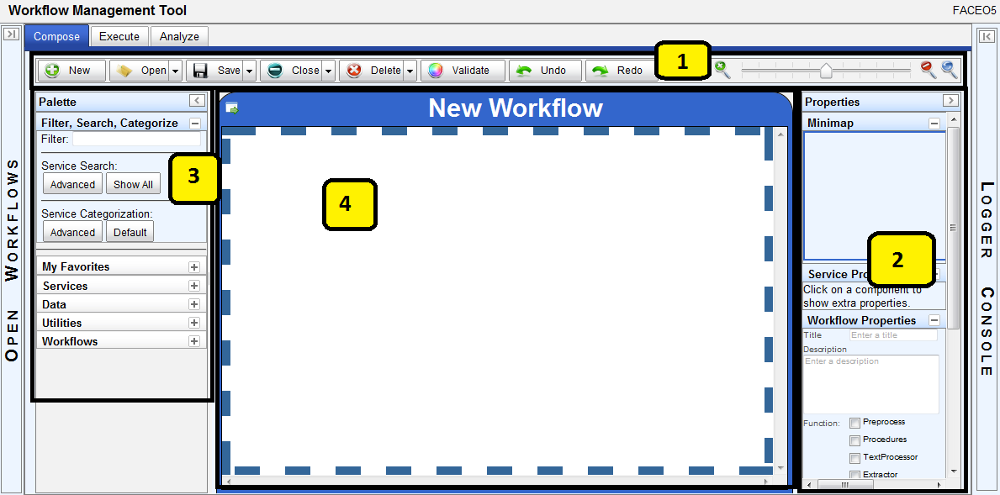

Compose Perspective Layout

Above you can see the layout for the Compose Perspective. (Note that this page does not include
information about the layout outside the compose perspective; for details on the open workflows
list and logger console, see the tool layout overview.)
The perspective comprises the following sections:
- The toolbar. This area has the buttons for the main composition actions available in
this perspective, including: new, open, save, close, delete, validate, undo, redo. This area also
has the zoom slider and buttons to control the zooming of the canvas.
- The properties panel. This area has configuration widgets that allow you to change
different properties. At the top is a "mini map" which shows you an overall view of the workflow.
Next are the properties of any service on the canvas that you have selected. Next are the
properties of the workflow itself. Finally, any relevant data properties are shown.
- The palette.. This area holds all the services that are available on SORASCS to compose
in a workflow. In this area you can:
- Filter the displayed services by name.
- Do an advanced search of the services based on their meta-information.
- Do an advanced re-categorization of the services based on their meta-information.
- Mark and unmark which your "favorite" services are, to show up in the "My Favorites" list.
- See all the services categorized by their type: services, data, utilities, and workflows.
- The composition canvas. This is the area where you actually build the workflow. It is
a graphical canvas where services can be dragged-and-dropped and their ports can be connected with
dragging-and-dropping as well.